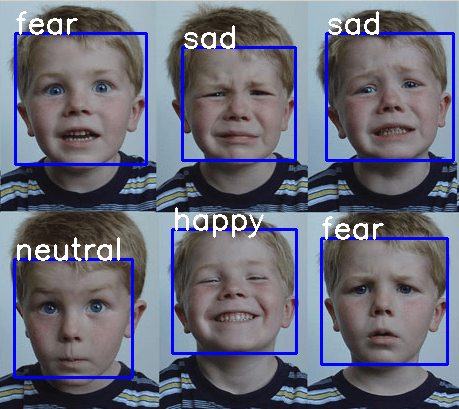

SHEETHA HEMANTH KUMAR
I am a CS Undergraduate Student in MLRIT,Hyderabad. I am co-advised by Laxmi Lingutla.
I am interested in creating and understanding deep and reinforcement learning models,Misclassification of Labels due to change in data distribution, how exactly neural networks can store information and output the correct labels, understanding how the change in the environment effects a reinforcement learning agent and understanding why can't a Deep Learning Model learn effectively without large Datasets.

Phishing Website Detection using Deep Learning

I've developed a Deep Learning Model to detect Phishing Websites by taking 30 features as an input. I've experimented various optimizers and architectures.
Face Expression Detection using Deep Learning

I've developed a Face Expression Detection Model using various architectures. I've experimented with transfer learning models like VGG-16 and Inception-v3 etc . I've achieved an accuracy around 80% for Face Expression Detection.
I've developed a Deep Learning model to Identify Plant Species. The Model can classify different plant species effectively.

I've developed and trained a model which identifies 5 landmarks on face namely left eye,right eye,nose,left side of mouth and right side of mouth
Handwritten Text Detection

I've Developed a Deep Learning Model using Sequencing with CTC to identify handwritten digits appropriately.